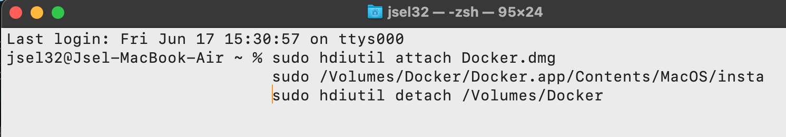

Docs
Instructions on how to implement the code

Instructions on how to implement the code
This web application was written as part of my dissertation for the MSc of Computer Engineering and Informatics, University of Patras. The Thesis delves into the procedure and the required operations for developing applications as microservices along with the use of Google’s programming language Golang as well as deployment, scaling, and management of applications. It focuses on container technology as the appropriate implementations for containerization based on Docker containers and Kubernetes which is a container orchestration system for automated and how the latter has emerged as a rather significant part of the cloud computing infrastructure. The scaling procedures for developing and integrating the required tools for data collection and visualisation, Prometheus and Grafana, are exhibited. Link for the dissertation
The first steps is to install docker. Depending on the operation system the Docker engine is pretty simple to install.
After downloading the Docker.dmg:
$ sudo apt-get install docker-ce docker-ce-cli containerd.io docker-compose-pluginUsing the Homebrew package manager
$ brew install kubectl Dimitris Selis